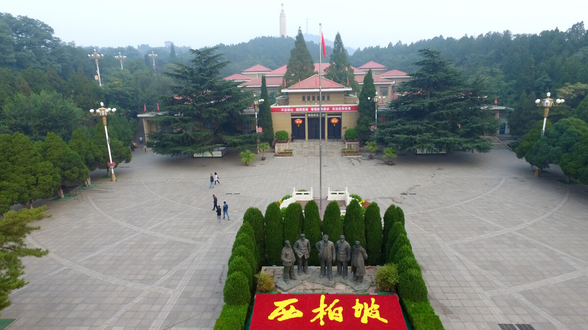

河北省石家庄市西柏坡景区

西柏坡原名“柏卜”，始建于唐代。
民国二十四年（1935年），一位教书先生把“卜”改为“坡”，于是就有了西柏坡。
民国三十六年（1947年）5月，以刘少奇、朱德为首的中央工作委员会先期进驻西柏坡。在西柏坡召开了中国土地会议，颁布并实施了《中国土地法大纲》。
民国三十七年（1948年）5月，毛泽东、周恩来、任弼时率领中共中央和解放军总部移驻西柏坡，在此组织指挥了较为出名的辽沈、淮海、平津三大战役，召开了具有伟大历史意义的中共七届二中全会。
民国三十八年（1949年）3月23日，毛泽东主席和党中央离开西柏坡迁往北京。西柏坡以其特殊的贡献载入了中国革命的史册。 [3]
1958年，由于修建岗南水库，西柏坡和东柏坡等20个村庄被搬迁。 [9]
1978年，为纪念中共中央和解放军总部移驻西柏坡30周年，西柏坡中共中央旧址和西柏坡纪念馆正式对外开放